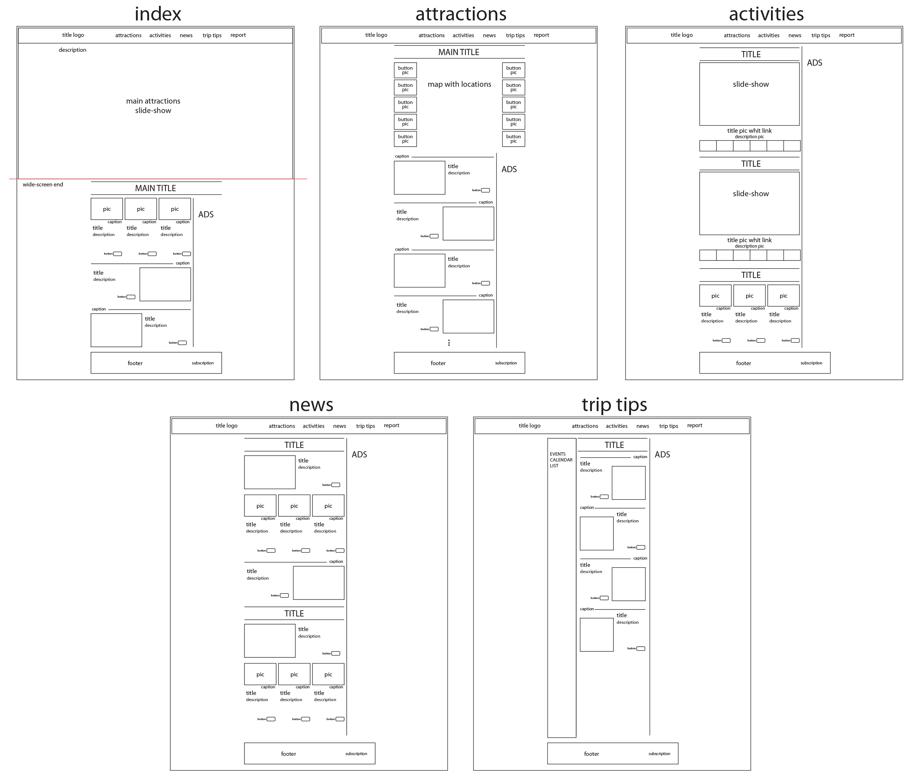
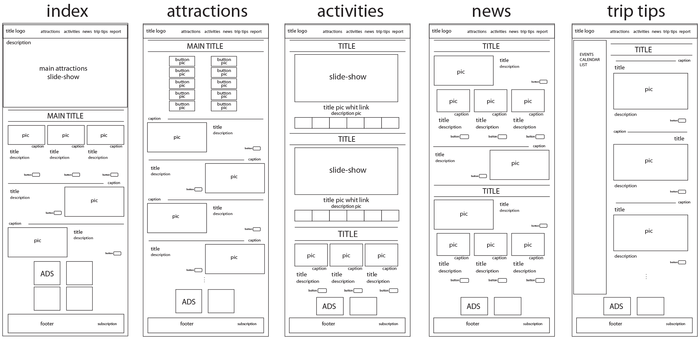
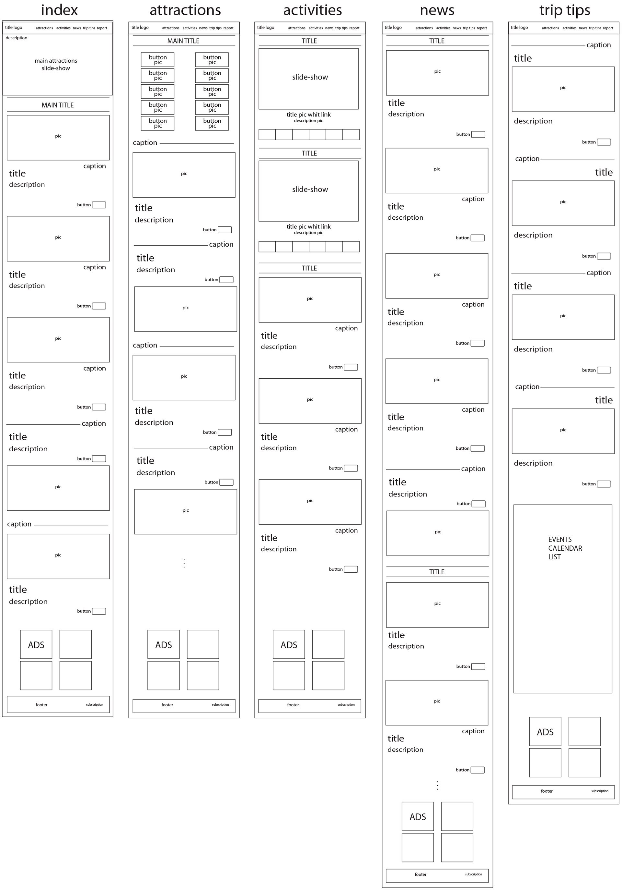

Report
Federico Sulimovich
SN220195973
-Introduction-
-The website is structured as an online magazine that focuses on the tourist region of Patagonia. It contains
information about the most popular places to visit in Patagonia, the activities that can be done in each place,
updated news about the area, and various articles of interest. It also has a page with essential recommendations
for new tourists.
-The website has a classic structure. It features a homepage displaying a photographic introduction to the
Patagonia region, followed by a list of the website's key topics. Advertisements are displayed on the right
side. The main menu provides access to various types of information that users may need. This information is
primarily divided into:
1. Main Tourist Attractions
2. A comprehensive list of activities to do in the region
3. The news and featured articles page
4. The recommendations page for those planning to travel to Patagonia
Additionally, in the footer of the page, you can find the contact information and an option to subscribe to the
magazine.
-Inspiration-
-I used to go backpacking to different places in Patagonia when I was younger. It's one of the most beautiful
places I know.
-I've seen several websites, and the ones that inspired me the most were:
• borispatagonia.com
• interpatagonia.com
• patagonia.gob.ar
-Another source of inspiration is the hope that one day I'll move to the region and can turn this initial
mock-up into a reality.
-Accessibility-
-Image Descriptions: I've incorporated alternative text (alt text) for every image across the website. This
alt text can be read out by screen reading software, enhancing comprehension of the content for individuals with
visual impairments who may not be able to see the images.
-Keyboard-Friendly Navigation: The entire website is designed to be easily navigated and utilized by tabbing
through its elements, ensuring accessibility for keyboard users.
-Simplified Design: The website's design maintains a clean and uniform layout, and it employs color combinations
with sufficient contrast to accommodate readers with color blindness.
-Usability-
-Adaptive Layout: The website employs responsive design, ensuring that content is properly and visibly
presented on smaller screens. When viewed on mobile devices, the column structure, visible on desktop layouts,
adjusts to allow content to occupy the entire screen width.
-Interactive Hover Effects: Interactive hover effects are applied to clickable cards and buttons, as well as
stylistic changes when users hover over or click on navigation bar links.
-Consistent Design: The website maintains a uniform design across all its pages. When a user visits one page,
they can quickly deduce how other pages will behave, allowing this consistent pattern to guide them toward their
desired content. This ensures that users can easily grasp the site's usability, thanks to its straightforward
and simplistic design.
-Following Standard Website Conventions: The website adheres to common website practices. Features like vertical
scrolling, a compact device dropdown menu, and intuitive navigation are included, meeting users' expectations
for a website's usability.
-Learning-
-I had to learn how to create different slide shows using JavaScript. For this, I used W3Schools and other
online tutorials.
-I also had to learn how to use grids in a way that they would work responsively on any device and ensure that
the designs maintained their integrity when the screen size was modified. I did this by watching class tutorials
and examples, experimenting, and making changes until it looked good.
-Additionally, I had to learn how to create a transparent menu that appears over the main slide show and
displays a dropdown menu, which is also responsive for various types of devices. To learn how to do this, I also
used W3Schools and some other tutorials on the internet.
-Evaluation I-
I consider the website's overall design to be a successful outcome. It's straightforward, user-friendly, and
effectively captures the essence of Patagonia's identity. I believe this design would immediately attract
attention and contribute to retaining users. And since it was my first project, I wanted to do everything
without using Bootstrap. Given that this was my initial endeavor on such a significant project, I am pleased
with how well the design came together.
-Evaluation II-
I think I still have a lot to learn. I would have liked to make the map a bit more interactive, with more
possibilities, and have only one photo changing according to the mark instead of having all the images at once.
I also didn't have time to learn how to implement Handlebars.
-Resources-
References:
[1] www.w3schools.com, ‘how to’. ‘Navbar on image’
https://www.w3schools.com/howto/howto_css_navbar_image.asp#gsc.tab=0
[2] www.w3schools.com, ‘how to’. ‘slideshow’
https://www.w3schools.com/howto/howto_js_slideshow.asp
[3] www.w3schools.com, How TO - Slideshow Gallery
https://www.w3schools.com/howto/howto_js_slideshow_gallery.asp
[4] https://stackoverflow.com/
[5] p5js.org library.
Sources:
[1] No author indicating. https://getwallpapers.com/collection/patagonia-wallpapers
[2] No author indicating. https://www.wallpaperflare.com/search?wallpaper=patagonia
[3] No author indicating. https://rotadeferias.com.br/6-estacoes-de-esqui-neve-na-america-do-sul/
[4] Photographer: jorge Gonzalez. Sabrosa tentacion – Villa Pehuenia.
https://www.welcomeargentina.com/villapehuenia/photographs.html
[5] No author indicating.
https://elenviador.com/2020/10/15/parque-nacional-los-alerces-una-maravilla-natural-de-argentina-para-el-mundo/
[6] No author indicating. https://www.pxfuel.com/en/desktop-wallpaper-xifqq
[7] cespejo83. https://www.tripadvisor.ca/Profile/cespejo83?fid=63a12682-f1dc-47d2-827d-62d381e1fbf3
[8] No author indicating. www.escuelaxtreme.com
[9] No author indicating. www.amapatagoniarentacar.com.ar
[10] No author indicating. apartdellago.com.ar
[11] No author indicating.
https://www.10wallpaper.com/view/perito_moreno_glacier-Travel_landscape_photography_Wallpaper.html
[12] Jaques et Sergio. https://www.amerique-dusud.com/single-post/2018/02/16/caviahue-copahue-neuqu%C3%A9n
[13] Ente de Turismo de Puerto Madryn. https://www.tangol.com/blog/eng/what-to-do-in-puerto-madryn_post_261
[14] https://images.musement.com/cover/0159/36/adobestock-122035157-jpeg_header-15835856.jpg
[15] Rainer Lesniewski. https://pedalchile.com/blog/where-is-patagonia
[16] Photo credit: Silvestre Seré, Patagonia Ascent.
https://www.tripadvisor.com/Attraction_Review-g316035-d12941928-Reviews-Patagonia_Ascent-El_Chalten_Province_of_Santa_Cruz_Patagonia.html
[17] No author indicating. https://madryn.travel/en/turismo-aventura/buceo-snorkelling/
[18] No author indicating.
https://dynamic-media-cdn.tripadvisor.com/media/photo-o/1a/31/3d/9e/caption.jpg?w=1200&h=-1&s=1
[19] No author indicating.
https://www.tripadvisor.com/Attraction_Review-g312848-d12178375-Reviews-Parapente_BRC-San_Carlos_de_Bariloche_Province_of_Rio_Negro_Patagonia.html#/media-atf/12178375/321487864:p/?albumid=-160&type=0&category=-160
[20] No author indicating. https://festregards.com/2020/12/04/the-patagonia-triple-crown/
[21] photo: Magic Waters Lodge https://www.hatchmag.com/fly-fish-chile-hatch-magazine
[22] Photo: Lee House. https://www.patagonia.com/stories/a-brave-generous-place/story-92560.html
[23] No author indicating. https://outdoor-guide.ch/aktuelles/patagonia-nachhaltig-auf-dem-bike/
[24] No author indicating. https://patagonia.gob.ar/en/actividades/golf/
[25] No author indicating. https://patagonia.gob.ar/wp2019/wp-content/uploads/2019/11/9-Golf-Llao-Llao-1.jpg
[26] No author indicating.
https://www.santacruzalmomento.com.ar/2019/06/28/habilitan-patinar-sobre-el-hielo-en-el-lago-de-el-calafate/
[27] No author indicating. https://www.facebook.com/paintballushuaia/photos
[28] No author indicating. https://porelmundo.viajes/navegando-entre-los-glaciares-de-la-patagonia-argentina/
[29] No author indicating.
https://www.ecocamp.travel/hubfs/Patagonia%20United%20/Mirador%20el%20Toro%20Lookout.jpg
[30] No author indicating.
https://www.tripadvisor.com/Attractions-g312832-Activities-c61-t188-Puerto_Madryn_Province_of_Chubut_Patagonia.html
[31] No author indicating.
https://patagonia.gob.ar/2023/08/21/se-lanzo-la-temporada-2023-de-avistaje-de-fauna-marina-y-costera/
[32] No author indicating.
https://patagonia.gob.ar/2023/08/13/el-glaciar-perito-moreno-nominado-para-los-premios-world-travel-awards/
[33] No author indicating.
https://www.rionegro.com.ar/voy-turismo/pesca-con-mosca-se-viene-la-expo-fly-fishing-en-san-martin-de-los-andes-cuando-y-como-sera-3143733/
[34] No author indicating.
https://patagonia.gob.ar/2023/07/02/cuatro-destinos-patagonicos-seleccionados-para-el-concurso-best-tourism-villages/
[35] Xavier Martín.
https://www.lanacion.com.ar/revista-lugares/valle-cretacico-el-area-natural-patagonica-que-impacta-por-su-belleza-y-muy-pocos-conocen-nid19062023/
[36] No author indicating.
https://www.infobae.com/sociedad/2020/07/14/la-cueva-de-las-manos-una-de-las-mayores-atracciones-turisticas-de-santa-cruz-paso-a-manos-del-gobierno/
[37] No author indicating. https://www.laf5.com/textocomp.asp?id=9634
[38] No author indicating. https://www.kimkim.com/ab/getting-to-bariloche
[39] No author indicating. https://intriper.com/lectura/como-visitar-la-patagonia-argentina-guia-practica/
[40] No author indicating. https://www.allaboutwanderlust.com/travel-blog/ultimate-guide-to-patagonia
[41] No author indicating. https://www.patagoniacabins.com/gauchocabin
-Desktop Wireframes-

-Tablet Wireframes-

-Mobile Wireframes-
